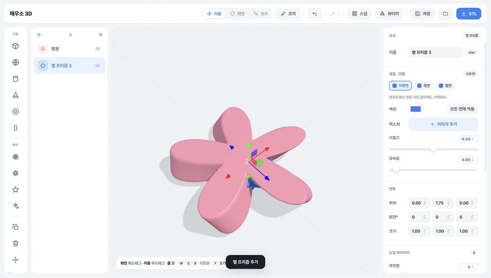

모서리 둥글기
반경이 곧 둥근 정도가 됩니다. 모서리를 클릭하면 분할로 쪼개진 조각이 아니라 코너에서 코너까지 한 줄이 통째로 잡힙니다.
반경강도
감지 각도세분화
파라메트릭 3D 모델링 · macOS
상자와 구에서 시작해 모디파이어를 쌓고, 면마다 칠하고, 모서리를 골라 둥글립니다. 만든 건 STL로 내보내 그대로 3D 프린터에 넘길 수 있습니다.
선택한 모서리
작업 화면

작업 순서
앞 단계를 지우지 않고 계속 되돌아가 고칠 수 있습니다. 도형은 마지막까지 숫자로 남아 있습니다.
상자·구·원기둥·원뿔·토러스·캡슐. 여기에 꽃, 기어, 별 프리즘 같은 파라메트릭 도형이 더 있습니다.
비틀기·구부리기·테이퍼·물결·노이즈·꽃잎화를 겹쳐 쌓습니다. 순서를 바꾸면 결과가 달라집니다.
윗면만 사진을 넣고 옆면은 색으로. 뷰포트에서 면을 직접 클릭해 고를 수 있습니다.
보이는 도형을 하나로 묶어 STL로 저장합니다. 슬라이서에 그대로 넣으면 됩니다.
들어있는 것
조건에 맞는 모서리를 전부 둥글릴 수도, 뷰포트에서 클릭해 고른 모서리만 둥글릴 수도 있습니다. 평평한 면은 건드리지 않습니다.
반경이 곧 둥근 정도가 됩니다. 모서리를 클릭하면 분할로 쪼개진 조각이 아니라 코너에서 코너까지 한 줄이 통째로 잡힙니다.
도형이 스스로 몇 개의 면으로 나뉘는지 알고 있습니다. 면마다 색과 이미지를 따로 지정합니다.
이미지를 넣으면 도형 크기에 맞게 한 장이 딱 들어갑니다. 일부러 타일처럼 반복하고 싶을 때만 반복 값을 올리면 됩니다.
두 도형을 합치고, 빼고, 겹친 부분만 남깁니다. 브러시로 정점을 직접 밀어 다듬을 수도 있습니다.
작업을 통째로 저장합니다. 더블클릭하면 앱이 열리고, 저장하지 않은 변경이 있으면 닫기 전에 물어봅니다.
필요한 건 전부 앱 안에 들어 있습니다. 비행기 안에서도 켜자마자 그대로 씁니다.
설치
위가 Apple Silicon(M1 이후), 아래가 Intel 맥용입니다. 받은 dmg를 열고 앱을 응용 프로그램 폴더로 끌어다 놓으면 끝입니다.
개인이 만든 앱이라 애플 공증을 받지 않았습니다. 그냥 더블클릭하면 “확인되지 않은 개발자” 경고가 뜹니다. 앱을 우클릭 한 다음 열기를 고르면 한 번만 확인하고, 그 뒤로는 평소처럼 열립니다.